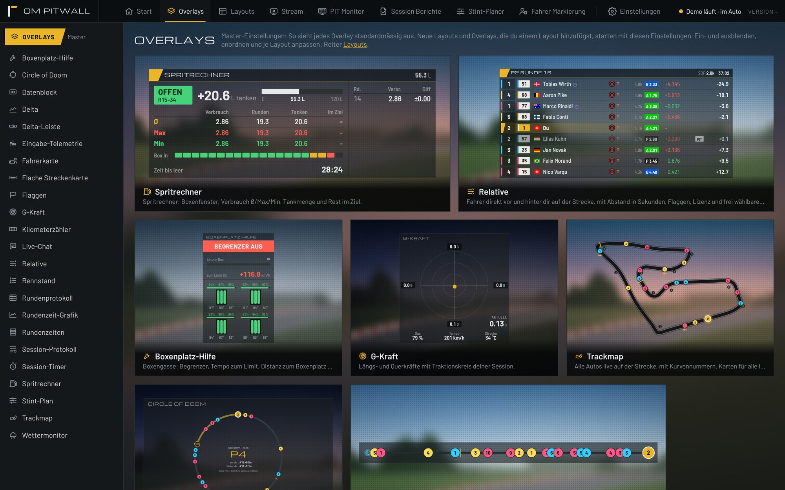
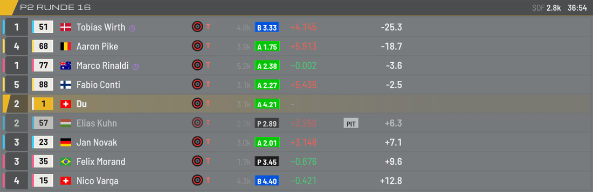
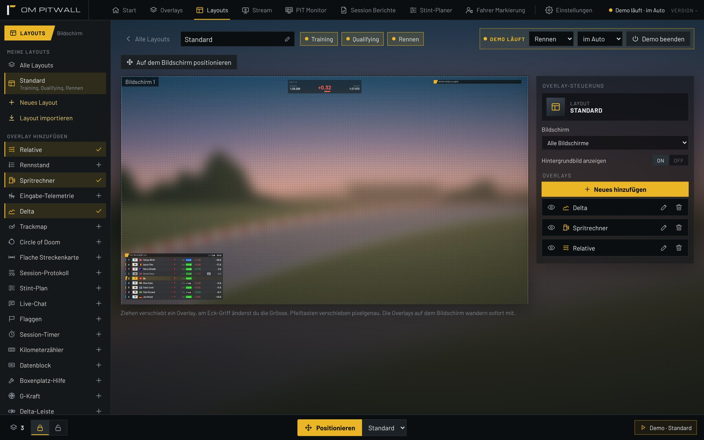
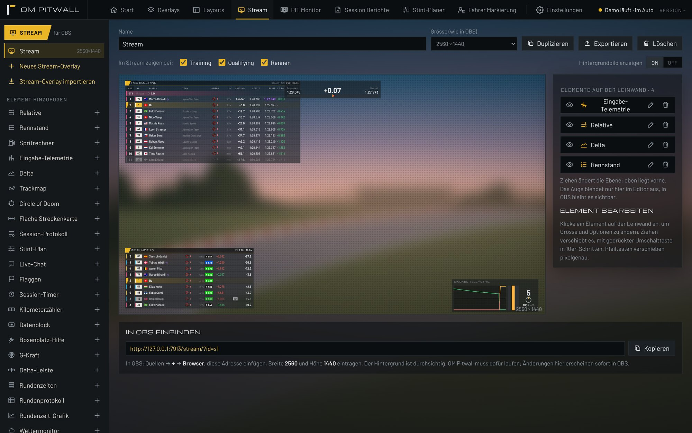
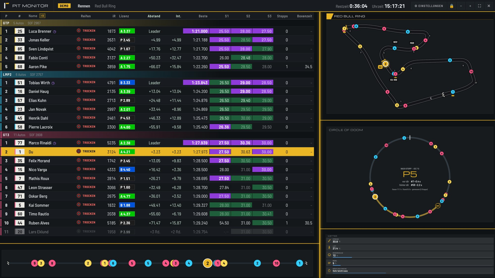
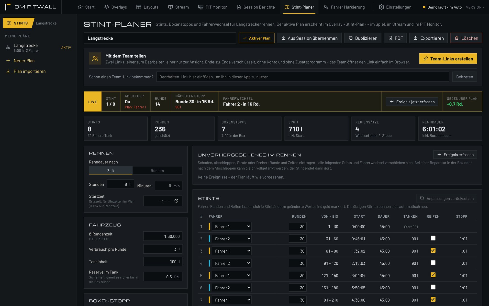
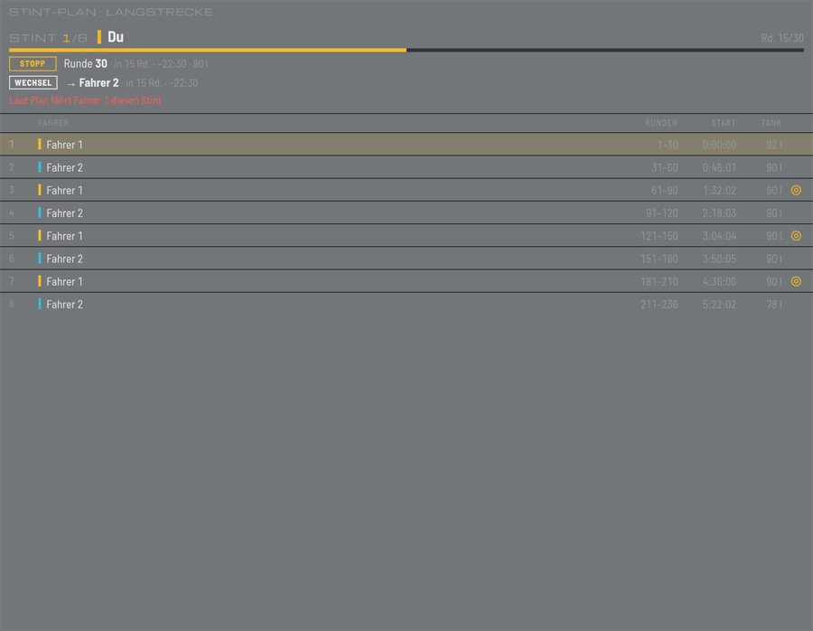
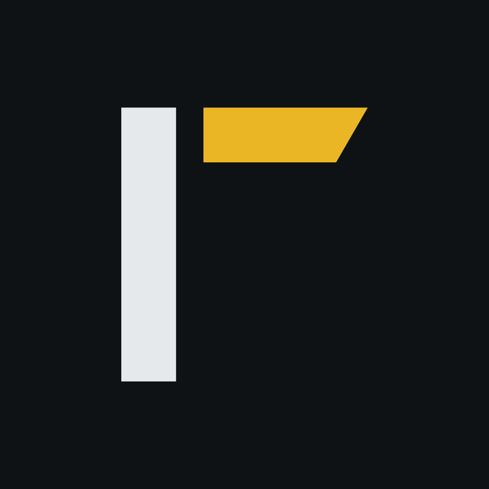

Deine Boxenmauer.
Für iRacing.
Overlays, PIT Monitor, Stream-Szenen und Stint-Planer. In einer App. Kostenlos – für immer!
Version 1.4.105

Overlays
Ein Blick genügt.
Wenige, grosse Werte direkt über iRacing. Du bist immer im Fokus. Violett ist die schnellste Runde im Feld, Grün deine persönliche Bestzeit.

Relative
Dazu 15 weitere Overlays:
Layouts
Dein Cockpit.
Pixelgenau.
Ziehen, Grösse ändern, fertig. Der Editor zeigt deinen Monitor massstabsgetreu, die Overlays über iRacing wandern sofort mit.

1 2 3 4 5 6- 1
Session-Zuordnung
Training, Qualifying und Rennen bekommen je ein Layout. OM Pitwall wechselt automatisch.
- 2
Overlay hinzufügen
Alle 23 Overlays mit einem Klick ins Layout holen. Ein Häkchen zeigt, was schon drin ist.
- 3
Dein Bildschirm
Massstabsgetreu. Ziehen verschiebt, der Eck-Griff ändert die Grösse, Pfeiltasten verschieben pixelgenau.
- 4
Overlay-Steuerung
Ein- und ausblenden, Einstellungen öffnen oder entfernen. Bei mehreren Monitoren wählst du hier den Bildschirm.
- 5
Demo-Modus
Ohne iRacing ein GT3-Rennen simulieren, im Auto oder in der Box. Ideal zum Einrichten.
- 6
Positionieren
Die Overlays erscheinen direkt über deinem Spiel. Fertig positioniert, gesperrt, losfahren.
Stream
Sendefertig.
Ohne Grafiker.
Bau ganze Szenen in der Grösse deines Streams und bind sie in OBS ein. Jede Änderung ist sofort live.

Tippe auf ein +, um mehr zu erfahren.
Für OBS gemacht
Jede Szene hat eine eigene Adresse für die Browser-Quelle. Hintergrund durchsichtig.
Live-Chat
Der Chat deines Streams als eigenes Element, im Spiel und auf der Leinwand.
Stream Deck
Layouts wechseln, Overlays sperren und Werte anzeigen direkt vom Elgato Stream Deck.
Plugin ladenPIT Monitor
Die Box.
Auf deinem zweiten Bildschirm.
Zeitentabelle mit allen Klassen, Sektoren und Boxenstopps. Trackmap, Circle of Doom und Wetter ordnest du frei darum herum.

1 2 3 4 5 6 7 8- 1
Klassen
GTP, LMP2 und GT3 getrennt, jede mit eigenem Leader und eigener Stärke des Feldes.
- 2
Sektoren in Farbe
Violett ist die schnellste Zeit im Feld, Grün eine persönliche Bestzeit.
- 3
Du, immer im Fokus
Deine Zeile ist immer hervorgehoben. Ein Klick auf einen Fahrer schaltet die iRacing-Kamera auf ihn.
- 4
Boxenstopps
Anzahl Stopps, Runde und Standzeit für jedes Auto im Feld.
- 5
Trenner
Linien zwischen den Elementen, auf Wunsch leuchtend. Sie verbinden sich selbst zu Ecken und T-Stücken.
- 6
Trackmap
Alle Autos live auf der Strecke, mit Kurvennummern und Fahrerkürzeln.
- 7
Circle of Doom
Wo du nach dem Stopp wieder rauskommst, mit dem Auto vor und hinter dir.
- 8
Streckenband
Das ganze Feld auf einer Linie. Lücken und Pulks auf einen Blick.
Stint-Planer
24 Stunden.
Durchgerechnet.
Renndauer, Verbrauch und Fahrer eintragen. OM Pitwall plant Stints, Stopps, Reifen und Fahrerwechsel. Und rechnet im Rennen live mit.

Einmal eintragen
Renndauer, Rundenzeit, Verbrauch und Tankgrösse festlegen, Fahrer eintragen. Den Rest rechnet OM Pitwall.
- Stints, Stopps und Tankmengen
- Reifenwechsel jeder zweite Stopp oder nach Wahl
- Fahrer pro Stint frei zuweisen
Live mitgerechnet
Die Live-Leiste zeigt Stint, Fahrer am Steuer, nächsten Stopp und den nächsten Fahrerwechsel.
- «Gegenüber Plan» in Runden
- Schaden, Strafe oder Dreher als Ereignis erfassen
- Alle folgenden Stints verschieben sich

Immer im Blick
Das Overlay «Stint-Plan» zeigt den aktiven Plan im Spiel, im Stream und im PIT Monitor.
- Nächster Stopp mit Runde und Tankmenge
- Nächster Fahrerwechsel
- Hinweis, wenn der falsche Fahrer fährt
Mit dem Team teilen
Ein Link zum Bearbeiten, einer zum Ansehen. Ende-zu-Ende verschlüsselt, ohne Konto.
Wenn es anders kommt
Schaden, Strafe oder Dreher als Ereignis erfassen. Alle folgenden Stints verschieben sich.
Fürs Briefing
Den Plan als PDF exportieren und vor dem Start mit allen durchgehen.
Und noch mehr drin.
Session-Berichte
Jede Session wird aufgezeichnet, mit Auswertung pro Runde und Export als PDF oder CSV.
Fahrer markieren
Rivalen und saubere Fahrer markieren. Die Markierung erscheint in Relative, Rennstand und PIT Monitor.
Deine Farben
Vorlagen wie OM Gold, Rennrot, Papaya oder Eisblau, oder ganz eigene Farben.
40 bis 300 %
Jedes Overlay in der Grösse, die zu deinem Monitor passt. Am Griff ziehen oder Mausrad drehen.
Demo-Modus
Ohne iRacing ein GT3-Rennen simulieren. Ideal, um Overlays und OBS einzurichten.
Automatische Updates
Neue Versionen kommen von selbst. Du fährst immer mit dem neuesten Stand.
Tritt der Community bei.
Fragen stellen, Layouts teilen, Ideen für neue Funktionen einbringen und mit anderen Fahrern und Teams fachsimpeln. Auf dem Discord-Server von OM Pitwall.
discord.gg/qYybSH6v3e
Bereit für den
nächsten Stint.
OM Pitwall ist kostenlos und läuft unter Windows neben iRacing.
Version 1.4.105 · Setup für Windows · Plugin für die Elgato-Stream-Deck-Software (Doppelklick installiert es)